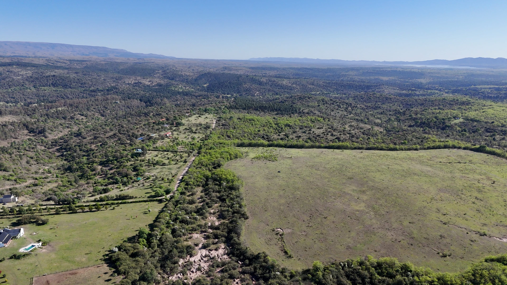

El Alto de los Cinco nace de la visión de quienes conocen y valoran profundamente este lugar. La intención es crear un desarrollo de chacras de alto nivel, pensado para el futuro y en armonía con el entorno.
Un desarrollo de chacras exclusivo.
Calidad, naturaleza y seguridad jurídica.

El Alto de los Cinco nace de la visión de quienes conocen y valoran profundamente este lugar. La intención es crear un desarrollo de chacras de alto nivel, pensado para el futuro y en armonía con el entorno.
Integrar naturaleza, calidad y proyección a futuro, generando un entorno que inspire a quienes buscan invertir y vivir en un lugar único.
El compromiso con la calidad y el respeto al entorno forma parte integral y formal de la inversión en este desarrollo.
Ubicado en un lugar privilegiado dentro del ejido de Villa General Belgrano, El Alto de los Cinco ofrece vistas panorámicas, proximidad al río Los Reartes y acceso privado.
Todas las chacras se encuentran inscriptas y aprobadas, con mensura registrada y situación dominial inscripta.
Mensura real y profesional realizada por agrimensor matriculado. Siendo la base para la definición de superficies, límites, accesos y pendientes del terreno.
Todas las chacras cuentan con títulos oficiales inscriptos en el registro de la propiedad. Subdivisiones bajo el régimen de propiedad horizontal especial.
Información gráfica y técnica del relevamiento incluye pendientes de gota, líneas de relieve y modelos 3D del terreno.
Mapa interactivo con overlays de planos.
Los invitamos a conocer el lugar. Para coordinar una visita o recibir más información, pueden contactarnos.
{kind=link}
{kind=link}
{kind=link}
{kind=link}
{kind=link}
{kind=link}
{kind=link}
{kind=link}
{kind=link}